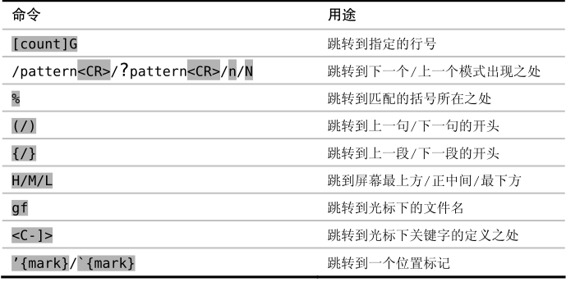

技巧55遍历跳转列表
Vim 会记录跳转前后的位置，并提供了一些命令让我们能够沿原路返回。
在网页浏览器中，我们习惯于用后退按钮返回之前浏览过的网页。而Vim则通过跳转列表提供了类似的功能。<C-o>命令像后退按钮一样，而与之互补的<C-i>命令则像是前进按钮。这两条命令允许我们对 Vim 的跳转列表进行遍历。不过，究竟什么是跳转呢？
让我们先这样区分，动作命令在一个文件内移动，而跳转则可以在文件间移动（虽然很快我们就会看到，有些动作命令也被归为跳转）。我们可以用如下命令查看跳转列表的内容：
➾ :jumps
《 jump line col file/text
4 12 2 <recipe id="sec.jump.list">
3 114 2 <recipe id="sec.change.list">
2 169 2 <recipe id="sec.gf">
1 290 2 <recipe id="sec.global.marks">
>
Press Enter or type command to continue
任何改变当前窗口中活动文件的命令，都可以被称为跳转命令。Vim 会把执行跳转命令之前和之后的光标位置，记录到跳转列表中。例如，如果我们运行:edit 命令打开了一个新文件（参见技巧41），那么就可以用<C-o>和<C-i>命令在这个新文件以及原本的文件之间来回跳转。
用[count]G命令直接跳到指定的行号也会被当成一次跳转，但每次向上或向下移动一行则不算。面向句子的动作及面向段落的动作都算跳转，但面向字符及面向单词的动作则不算。用一句话来概括，我们可以说大范围的动作命令可能会被当成跳转，但小范围的动作命令则只能算移动。
下表节选了一些跳转动作：

<C-o>和<C-i>命令本身不会被当成动作命令。也就是说，我们既不能用它们扩大可视模式的选区，也不能在操作符待决模式中使用它们。我个人更倾向于把跳转列表当成一条“面包屑小径”(2)，它记录了我们在编辑会话中所访问过的文件，用它就可以很容易地沿原路返回。
Vim 可以同时维护多份跳转列表。实际上，每个单独的窗口都拥有一份自己的跳转列表。如果你正在使用分割窗口或多标签页，那么<C-o>和<C-i>命令会始终在当前活动窗口的跳转列表范围内进行跳转。
映射 Tab 键时需注意的事项
试着在插入模式中按一下<C-i>，你会发现这和按<Tab>键的效果是一样的，因为 Vim 本来就把<C-i>和<Tab>当成同一个东西。
如果你试图重新映射<Tab>键的话，那么也应该意识到，当你按下<C-i>时，该映射项也会被触发（反之亦然）。看上去这可能不是什么大问题，不过考虑下这一点：如果你把<Tab>键映射成了其他功能，那么也将会改变<C-i>命令的缺省行为。仔细取舍一下这是否值得，如果你只能单方向遍历跳转列表的话，那么跳转列表的作用就会大打折扣了。